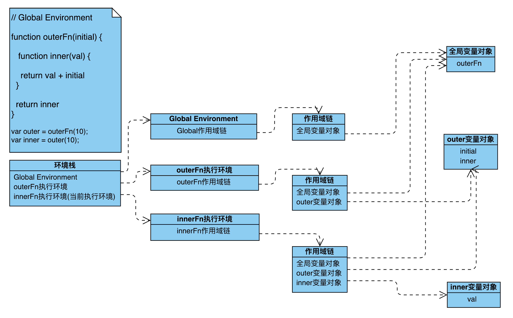
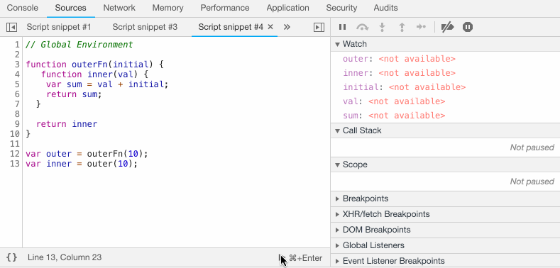

<!DOCTYPE html><html class="theme-next mist" lang="zh-Hans"><head><meta name="generator" content="Hexo 3.9.0"><meta charset="UTF-8"><meta http-equiv="X-UA-Compatible" content="IE=edge"><meta name="viewport" content="width=device-width,initial-scale=1,maximum-scale=1"><meta name="theme-color" content="#222"><link rel="manifest" href="/manifest.json"><link rel="stylesheet" media="all" href="/lib/Han/dist/han.min.css?v=3.3"><meta http-equiv="Cache-Control" content="no-transform"><meta http-equiv="Cache-Control" content="no-siteapp"><meta name="google-site-verification" content="UGOd-4AuTAVn0sg3M96JPfTUNvXjmjV0uCNLkjuKX8Q"><meta name="baidu-site-verification" content="codeva-cs18pREvQ9"><link href="https://cdn.jsdelivr.net/gh/tonsky/FiraCode@1.206/distr/fira_code.css" rel="stylesheet" type="text/css"><link href="https://cdnjs.cloudflare.com/ajax/libs/font-awesome/4.7.0/css/font-awesome.min.css" rel="stylesheet" type="text/css"><link href="/css/main.css?v=5.1.4" rel="stylesheet" type="text/css"><link rel="apple-touch-icon" sizes="180x180" href="/images/favicon.ico?v=5.1.4"><link rel="icon" type="image/png" sizes="32x32" href="/images/favicon.ico?v=5.1.4"><link rel="icon" type="image/png" sizes="16x16" href="/images/favicon.ico?v=5.1.4"><link rel="icon" type="image/png" sizes="16x16" href="/images/favicon.ico?v=5.1.4"><link rel="icon" type="image/png" sizes="16x16" href="/images/favicon.ico?v=5.1.4"><link rel="icon" type="image/png" sizes="16x16" href="/images/favicon.ico?v=5.1.4"><meta name="keywords" content="闭包,作用域,this,内存泄漏,"><link rel="alternate" href="/atom.xml" title="贪空" type="application/atom+xml"><meta name="description" content="作用域作用域是 JavaScript 里的一个非常重要和基础的概念. 很多人认为自己理解了作用域, 但是在遇到闭包时却说不出个所以然, 甚至不能识别出来.闭包也是个非常重要, 且经常被误解的概念. 然而闭包就是基于作用域书写代码时所产生的自然结果. 倘若抛开作用域讲闭包, 那都是耍流氓. 闭包可以说在平时的代码里随处可见, 但真正让闭包发挥积极作用的做法是隔离作用域、模块函数等.作用域机制是不能直"><meta name="keywords" content="闭包,作用域,this,内存泄漏"><meta property="og:type" content="article"><meta property="og:title" content="从游戏角度说作用域"><meta property="og:url" content="https://yexiaochen.github.io/从游戏角度说作用域/index.html"><meta property="og:site_name" content="贪空"><meta property="og:description" content="作用域作用域是 JavaScript 里的一个非常重要和基础的概念. 很多人认为自己理解了作用域, 但是在遇到闭包时却说不出个所以然, 甚至不能识别出来.闭包也是个非常重要, 且经常被误解的概念. 然而闭包就是基于作用域书写代码时所产生的自然结果. 倘若抛开作用域讲闭包, 那都是耍流氓. 闭包可以说在平时的代码里随处可见, 但真正让闭包发挥积极作用的做法是隔离作用域、模块函数等.作用域机制是不能直"><meta property="og:locale" content="zh-Hans"><meta property="og:image" content="https://yexiaochen.github.io/images/Aquaman.png"><meta property="og:image" content="https://yexiaochen.github.io/images/ScopeChain.png"><meta property="og:image" content="https://yexiaochen.github.io/images/devToolsWithScope.gif"><meta property="og:updated_time" content="2019-01-19T02:25:39.456Z"><meta name="twitter:card" content="summary"><meta name="twitter:title" content="从游戏角度说作用域"><meta name="twitter:description" content="作用域作用域是 JavaScript 里的一个非常重要和基础的概念. 很多人认为自己理解了作用域, 但是在遇到闭包时却说不出个所以然, 甚至不能识别出来.闭包也是个非常重要, 且经常被误解的概念. 然而闭包就是基于作用域书写代码时所产生的自然结果. 倘若抛开作用域讲闭包, 那都是耍流氓. 闭包可以说在平时的代码里随处可见, 但真正让闭包发挥积极作用的做法是隔离作用域、模块函数等.作用域机制是不能直"><meta name="twitter:image" content="https://yexiaochen.github.io/images/Aquaman.png"><script type="text/javascript" id="hexo.configurations">var NexT=window.NexT||{},CONFIG={root:"/",scheme:"Mist",version:"5.1.4",sidebar:{position:"left",display:"hide",offset:12,b2t:!1,scrollpercent:!1,onmobile:!0},fancybox:!1,tabs:!0,motion:{enable:!1,async:!1,transition:{post_block:"fadeIn",post_header:"slideDownIn",post_body:"slideDownIn",coll_header:"slideLeftIn",sidebar:"slideUpIn"}},duoshuo:{userId:"0",author:"博主"},algolia:{applicationID:"",apiKey:"",indexName:"",hits:{per_page:10},labels:{input_placeholder:"Search for Posts",hits_empty:"We didn't find any results for the search: ${query}",hits_stats:"${hits} results found in ${time} ms"}}}</script><link rel="canonical" href="https://yexiaochen.github.io/从游戏角度说作用域/"><title>从游戏角度说作用域 | 贪空</title><script type="text/javascript">var _hmt=_hmt||[];!function(){var e=document.createElement("script");e.src="https://hm.baidu.com/hm.js?7503c6e413a2a7205320ec2396c811d0";var t=document.getElementsByTagName("script")[0];t.parentNode.insertBefore(e,t)}()</script></head><body itemscope itemtype="http://schema.org/WebPage" lang="zh-Hans"><div class="container sidebar-position-left page-post-detail"><div class="headband"></div><header id="header" class="header" itemscope itemtype="http://schema.org/WPHeader"><div class="header-inner"><div class="site-brand-wrapper"><div class="site-meta"><div class="custom-logo-site-title"><a href="/" class="brand" rel="start"><span class="logo-line-before"><i></i></span> <span class="site-title">贪空</span> <span class="logo-line-after"><i></i></span></a></div><h1 class="site-subtitle" itemprop="description">贪空 Blog</h1></div><div class="site-nav-toggle"><button><span class="btn-bar"></span> <span class="btn-bar"></span> <span class="btn-bar"></span></button></div></div><nav class="site-nav"><ul id="menu" class="menu"><li class="menu-item menu-item-home"><a href="/" rel="section"><i class="menu-item-icon fa fa-fw fa-home"></i><br>首页</a></li><li class="menu-item menu-item-tags"><a href="/tags/" rel="section"><i class="menu-item-icon fa fa-fw fa-tags"></i><br>标签</a></li><li class="menu-item menu-item-categories"><a href="/categories/" rel="section"><i class="menu-item-icon fa fa-fw fa-th"></i><br>分类</a></li><li class="menu-item menu-item-archives"><a href="/archives/" rel="section"><i class="menu-item-icon fa fa-fw fa-archive"></i><br>归档</a></li></ul></nav></div></header><main id="main" class="main"><div class="main-inner"><div class="content-wrap"><div id="content" class="content"><div id="posts" class="posts-expand"><article class="post post-type-normal" itemscope itemtype="http://schema.org/Article"><div class="post-block"><link itemprop="mainEntityOfPage" href="https://yexiaochen.github.io/从游戏角度说作用域/"><span hidden itemprop="author" itemscope itemtype="http://schema.org/Person"><meta itemprop="name" content="贪空"><meta itemprop="description" content><meta itemprop="image" content="/images/avatar.jpeg"></span><span hidden itemprop="publisher" itemscope itemtype="http://schema.org/Organization"><meta itemprop="name" content="贪空"></span><header class="post-header"><h2 class="post-title" itemprop="name headline">从游戏角度说作用域</h2><div class="post-meta"><span class="post-time"><span class="post-meta-item-icon"><i class="fa fa-calendar-o"></i> </span><span class="post-meta-item-text">发表于</span> <time title="创建于" itemprop="dateCreated datePublished" datetime="2019-01-13T14:13:17+08:00">2019-01-13 </time><span class="post-meta-divider">|</span> <span class="post-meta-item-icon"><i class="fa fa-calendar-check-o"></i> </span><span class="post-meta-item-text">更新于&#58;</span> <time title="更新于" itemprop="dateModified" datetime="2019-01-19T10:25:39+08:00">2019-01-19 </time></span><span class="post-category"><span class="post-meta-divider">|</span> <span class="post-meta-item-icon"><i class="fa fa-folder-o"></i> </span><span class="post-meta-item-text">分类于</span> <span itemprop="about" itemscope itemtype="http://schema.org/Thing"><a href="/categories/很难么/" itemprop="url" rel="index"><span itemprop="name">很难么</span></a></span></span><div class="post-wordcount"><span class="post-meta-item-icon"><i class="fa fa-file-word-o"></i> </span><span class="post-meta-item-text">字数统计&#58;</span> <span title="字数统计">2,767 字 </span><span class="post-meta-divider">|</span> <span class="post-meta-item-icon"><i class="fa fa-clock-o"></i> </span><span class="post-meta-item-text">阅读时长 &asymp;</span> <span title="阅读时长">10 分钟</span></div></div></header><div class="post-body han-init-context" itemprop="articleBody"><h1 id="作用域"><a href="#作用域" class="headerlink" title="作用域"></a>作用域</h1><p>作用域是 JavaScript 里的一个非常重要和基础的概念. 很多人认为自己理解了作用域, 但是在遇到闭包时却说不出个所以然, 甚至不能识别出来.<br>闭包也是个非常重要, 且经常被误解的概念. 然而闭包就是基于作用域书写代码时所产生的自然结果. 倘若抛开作用域讲闭包, 那都是耍流氓. 闭包可以说在平时的代码里随处可见, 但真正让闭包发挥积极作用的做法是隔离作用域、模块函数等.<br>作用域机制是不能直接查看的, 我们首先模拟一个场景来尽可能的说明作用域这套规则, 然后通过代码片段和开发者工具进行验证.</p><h2 id="游戏存档"><a href="#游戏存档" class="headerlink" title="游戏存档"></a>游戏存档</h2><p>想必大家都有玩过游戏的经验. 刚开始的时候, 也就是第一关, 难度比较简单. 到了第二关的时候, 就在第一关的基础上加些难缠的角色, 难度相应地加大了. 关卡越是往后, 难缠的角色也就会越来越多.<br>可在游戏的时候, 由于各种原因, 往往我们不可能一下子通过所有的关卡, 所以游戏提供了存档的功能. 下次再玩的时候可以从存档里续上. 如果不想这样, 完全可以从头玩起.<br>为什么我们能从存档里直接跳到上次的关卡, 很显然, 这里是有记录存储的. 比如第一关有个场景食人花和海王, 第二关又多了个邪恶人等等. 每个关卡都会记录该关卡新增的角色或场景同时也会存储之前关卡的记录. 这样就保证了不同的存档的独立性, 无论在哪个关卡存档, 下次也定会续上之前的地方. 当然了, 我们也可以回到上一个关卡.</p><p><br>(<em>海王之雄风&amp;敌人之邪恶</em>)</p><h2 id="几个知识点"><a href="#几个知识点" class="headerlink" title="几个知识点"></a>几个知识点</h2><p>结合上面的场景, 我们再回头看看以下几个知识点.</p><ol><li><p>标识符: 变量、函数、属性的名字, 或者函数的参数.</p></li><li><p>每个函数都有自己的执行环境. 当执行流进入一个函数时, 函数的环境就会被推入一个环境栈中. 而在函数执行后, 栈将其环境弹出, 把控制权返回之前的执行环境.</p></li><li><p>执行环境定义了变量或函数有权访问的其它数据. 每个执行环境都有一个与之关联的变量对象, 环境中定义的所有变量和函数都保存在这个对象中. 某个执行环境中的所有代码执行完毕后, 该环境被销毁, 保存在其中的所有变量和函数定义也随之销毁.</p></li><li><p>当代码在一个环境中执行时, 会创建变量对象的一个作用域链.</p></li><li><p>作用域链是保证对执行环境有权访问的所有变量和函数的有序访问. 作用域的前端始终都是当前执行的代码所在的变量对象. 如果这个环境是函数, 则将其活动对象作为变量对象. 活动对象在最开始只包含一个变量, 即 arguments 对象. 作用域链中的下一个变量对象来自包含(外部)环境. 全局执行环境的变量对象始终都是作用域链的最后一个对象.</p></li><li><p>当某个环境中为了读取或写入而引入一个标识符时, 必须通过搜索来确定该标识符来确定该标识符实际代表什么. 搜索过程从作用域链的前端开始, 向上逐级查询与给定名字匹配的标识符. 如果在局部环境中找到了该标识符, 搜索过程停止, 变量就绪. 如果在局部环境中没有找到该变量名, 则继续沿作用域链向上搜索. 搜索过程将一直追溯到全局环境的变量对象. 如果在全局环境中也没有找到这个标识符, 则意味着该变量尚未声明.</p></li><li><p>作用域链本质上时一个指向变量对象的指针列表, 它只引用但实际不包含变量对象.</p></li></ol><p>如果我们把以上的几个知识点串起来, 这就是所谓的作用域链规则了. 上图解释一波.(arguments 应该加到变量对象里的, 图中没体现, 疏忽)</p><p></p><p>现在我们从最后两行说起,</p><figure class="highlight javascript"><table><tr><td class="gutter"><pre><span class="line">1</span><br><span class="line">2</span><br></pre></td><td class="code"><pre><span class="line"><span class="keyword">var</span> outer = outerFn(<span class="number">10</span>);</span><br><span class="line"><span class="keyword">var</span> inner = outer(<span class="number">10</span>);</span><br></pre></td></tr></table></figure><p>执行 <code>outer = outerFn(10)</code> 后, outer 拥有了返回函数的引用. <code>outer(10)</code> 在执行的时候它会创建 <strong>属于它自己</strong> 的作用域链, 这里包含函数所处外部环境的变量对象.<br>在读取 initial 变量时, 在 Inner 变量对象中没有检索到, 它会沿着作用域链向上搜索, 在 outer 变量对象里找到了该标识符, 搜索过程停止, 变量就绪.<br>函数在定义的时候就已经决定了之后执行时, 作用域里将包含什么. 这也解释了, 即使我们把定义在函数内部的函数扔在外边执行也能访问到函数内部的变量. 这和内部函数在哪执行没有半毛钱关系.<br>为什么强调 <strong>属于它自己</strong> 的呢?</p><figure class="highlight javascript"><table><tr><td class="gutter"><pre><span class="line">1</span><br><span class="line">2</span><br><span class="line">3</span><br><span class="line">4</span><br><span class="line">5</span><br><span class="line">6</span><br><span class="line">7</span><br><span class="line">8</span><br><span class="line">9</span><br><span class="line">10</span><br><span class="line">11</span><br><span class="line">12</span><br><span class="line">13</span><br></pre></td><td class="code"><pre><span class="line"><span class="function"><span class="keyword">function</span> <span class="title">outer</span>(<span class="params"></span>) </span>&#123;</span><br><span class="line">    <span class="keyword">var</span> num = <span class="number">0</span>;</span><br><span class="line">    <span class="keyword">return</span> <span class="function"><span class="keyword">function</span> <span class="title">inner</span>(<span class="params"></span>) </span>&#123;</span><br><span class="line">        <span class="keyword">return</span> num++;</span><br><span class="line">    &#125;</span><br><span class="line">&#125;</span><br><span class="line"><span class="keyword">let</span> innerFn_1 = outer();</span><br><span class="line"><span class="keyword">let</span> a_1 = innerFn_1()</span><br><span class="line"><span class="keyword">let</span> innerFn_2 = outer();</span><br><span class="line"><span class="keyword">let</span> a_2 = innerFn_2();</span><br><span class="line"></span><br><span class="line"><span class="keyword">let</span> a_1_1 = innerFn_1();</span><br><span class="line"><span class="keyword">let</span> a_2_2 = innerFn_2();</span><br></pre></td></tr></table></figure><p>innerFn_1 和 innerFn_2 都属于自己的作用域链, 而 a_1 和 a_2 则分别在 innerFn_1 和 innerFn_2 上创建了属于自己的作用域链. 所以它们函数里的 num 是属于不同作用域链里的变量. 但对于 a_1 和 a_1_1 来说它们都是基于 innerFn_1, 拥有同一 outer 变量对象, num 自然也是同一个, 所以会累加. 同理 a_2 和 a_2_2.</p><p>如果理解了这个, 那么面试常考的一题就小菜一碟了.</p><figure class="highlight javascript"><table><tr><td class="gutter"><pre><span class="line">1</span><br><span class="line">2</span><br><span class="line">3</span><br><span class="line">4</span><br><span class="line">5</span><br></pre></td><td class="code"><pre><span class="line"><span class="keyword">for</span>(<span class="keyword">var</span> i = <span class="number">1</span>; i &lt;= <span class="number">5</span>; i++) &#123;</span><br><span class="line">    setTimeout(<span class="function"><span class="keyword">function</span> <span class="title">timer</span>(<span class="params"></span>) </span>&#123;</span><br><span class="line">        <span class="built_in">console</span>.log(i);</span><br><span class="line">    &#125;, i*<span class="number">1000</span>)</span><br><span class="line">&#125;</span><br></pre></td></tr></table></figure><p>重点是执行的时候才会创建变量对象的一个作用域链.</p><blockquote><p>闭包是什么?</p></blockquote><p>如果理解了以上的概念, 就会觉得闭包是作用域埋的一个彩蛋, 用的好就是惊喜, 用的不好就成惊吓了.<br>当函数可以记住并访问所在的作用域, 即使函数是在当前作用域之外执行, 这时就产生了闭包. 这就和之前提到的游戏存档差不多.<br>好了, 扔几个闭包出来巩固一下.</p><figure class="highlight javascript"><table><tr><td class="gutter"><pre><span class="line">1</span><br><span class="line">2</span><br><span class="line">3</span><br><span class="line">4</span><br><span class="line">5</span><br><span class="line">6</span><br><span class="line">7</span><br><span class="line">8</span><br><span class="line">9</span><br><span class="line">10</span><br></pre></td><td class="code"><pre><span class="line"><span class="function"><span class="keyword">function</span> <span class="title">outer_1</span>(<span class="params"></span>) </span>&#123;</span><br><span class="line">    <span class="keyword">var</span> a = <span class="string">'hello world'</span>;</span><br><span class="line">    <span class="function"><span class="keyword">function</span> <span class="title">inner</span>(<span class="params"></span>) </span>&#123;</span><br><span class="line">        <span class="built_in">console</span>.log(a)</span><br><span class="line">    &#125;</span><br><span class="line">    outer_2(inner)</span><br><span class="line">&#125;</span><br><span class="line"><span class="function"><span class="keyword">function</span> <span class="title">outer_2</span>(<span class="params">fn</span>) </span>&#123;</span><br><span class="line">    fn()</span><br><span class="line">&#125;</span><br></pre></td></tr></table></figure><p>这里也有闭包.</p><figure class="highlight javascript"><table><tr><td class="gutter"><pre><span class="line">1</span><br><span class="line">2</span><br><span class="line">3</span><br><span class="line">4</span><br><span class="line">5</span><br><span class="line">6</span><br><span class="line">7</span><br><span class="line">8</span><br></pre></td><td class="code"><pre><span class="line"><span class="keyword">var</span> a = <span class="keyword">new</span> array(<span class="number">99999999</span>);</span><br><span class="line"><span class="function"><span class="keyword">function</span> <span class="title">b</span>(<span class="params"></span>) </span>&#123;</span><br><span class="line">    <span class="built_in">console</span>.log(b)</span><br><span class="line">&#125;</span><br><span class="line">b()</span><br><span class="line">body.addEventListener(<span class="string">'click'</span>, <span class="function"><span class="keyword">function</span>(<span class="params"></span>) </span>&#123;</span><br><span class="line">    <span class="built_in">console</span>.log(<span class="string">'hello world'</span>)</span><br><span class="line">&#125;)</span><br></pre></td></tr></table></figure><p>还有开头所说的可以结合开发者工具直观地看一下, 一张动态图解释一切.</p><p></p><h2 id="内存泄漏"><a href="#内存泄漏" class="headerlink" title="内存泄漏"></a>内存泄漏</h2><p>闭包之所以能成为闭包, 是因为它记录了函数所在的作用域. 现主流的自动垃圾收集机制正因为闭包的这个特点而不能释放内存. 闭包的滥用会导致导致内存能分配的空间变少, 最终崩溃.</p><p>正常来说, 函数在执行的过程中, 局部变量会被分配相应的内存空间, 以便存储它们的值, 直至函数执行结束. 此时局部变量占有的空间会被释放以供将来使用.</p><p>常说的回收机制之一, 标记清除, 它的工作原理是, 当变量进入执行环境时, 储存在内存中的所有变量都会被加上标记(至于什么标记我们不关心), 然后找到 <strong>环境中的变量</strong> 以及 <strong>被环境中引用的变量</strong>, 把它们之前加的标记给去掉. 而剩下的被标记的变量将被视为 <strong>准备</strong> 删除的变量. 最后, 垃圾收集器找出不再继续使用的变量, 释放其占用的内存. 所以, 一旦数据不再被需要, 应解除引用, 将其值设置为null.</p><figure class="highlight javascript"><table><tr><td class="gutter"><pre><span class="line">1</span><br><span class="line">2</span><br></pre></td><td class="code"><pre><span class="line">outer = <span class="literal">null</span>;</span><br><span class="line">inner = <span class="literal">null</span>;</span><br></pre></td></tr></table></figure><p>内部函数的执行环境会保存着外部环境活动对象的引用, 内部函数被扔出去后, 就意味着外部环境不能被销毁了.</p><h2 id="this"><a href="#this" class="headerlink" title="this"></a>this</h2><p>执行环境里记录的不只是这些, 它也记录了函数调用栈、函数调用方式等. this 和作用域有关系, 但不是你们想象的那种关系. 每个函数在被调用时都会自动取得两个特殊变量: this 和 arguments. 内部函数在搜索这两个变量时, 只会搜索到其活动对象为止(即当前变量对象). 因此永远不可能直接访问到外部函数中的这两个变量. 除非我们把外部作用域中的 this 对象保存在一个闭包能够访问到的变量里.</p><figure class="highlight javascript"><table><tr><td class="gutter"><pre><span class="line">1</span><br><span class="line">2</span><br><span class="line">3</span><br><span class="line">4</span><br><span class="line">5</span><br><span class="line">6</span><br><span class="line">7</span><br><span class="line">8</span><br><span class="line">9</span><br></pre></td><td class="code"><pre><span class="line"><span class="comment">// 很常见是不是😂</span></span><br><span class="line"><span class="keyword">let</span> obj = &#123;</span><br><span class="line">    a: <span class="function"><span class="keyword">function</span>(<span class="params"></span>) </span>&#123;</span><br><span class="line">        <span class="keyword">var</span> self = <span class="keyword">this</span>;</span><br><span class="line">        <span class="keyword">return</span> <span class="function"><span class="keyword">function</span>(<span class="params"></span>) </span>&#123;</span><br><span class="line">            <span class="built_in">console</span>.log(self)</span><br><span class="line">        &#125;</span><br><span class="line">    &#125;</span><br><span class="line">&#125;</span><br></pre></td></tr></table></figure><p>函数内部的 this 在函数执行时才正式被赋予相应的值, 所以说函数的调用位置很关键. 可以这么说, 谁 <strong>直接</strong> 调用了这个函数, this 就指向了谁. 如果不是对象在直接调用这个函数, 我们可统统认为是 undefined, 非严格模式浏览器环境下就是 window. 如果真想知道为什么, 可以直接看规范(神烦).</p><figure class="highlight javascript"><table><tr><td class="gutter"><pre><span class="line">1</span><br><span class="line">2</span><br><span class="line">3</span><br><span class="line">4</span><br><span class="line">5</span><br><span class="line">6</span><br><span class="line">7</span><br><span class="line">8</span><br><span class="line">9</span><br><span class="line">10</span><br><span class="line">11</span><br><span class="line">12</span><br><span class="line">13</span><br><span class="line">14</span><br><span class="line">15</span><br><span class="line">16</span><br><span class="line">17</span><br><span class="line">18</span><br><span class="line">19</span><br><span class="line">20</span><br></pre></td><td class="code"><pre><span class="line"><span class="meta">'use strict'</span></span><br><span class="line"><span class="function"><span class="keyword">function</span> <span class="title">a</span>(<span class="params"></span>) </span>&#123;</span><br><span class="line">    <span class="built_in">console</span>.log(<span class="keyword">this</span>)</span><br><span class="line">&#125;</span><br><span class="line"><span class="keyword">var</span> b = &#123;</span><br><span class="line">    a: <span class="function"><span class="keyword">function</span>(<span class="params"></span>) </span>&#123;</span><br><span class="line">        <span class="built_in">console</span>.log(<span class="keyword">this</span>);</span><br><span class="line">    &#125;,</span><br><span class="line">    b: <span class="function"><span class="keyword">function</span>(<span class="params"></span>) </span>&#123;</span><br><span class="line">        <span class="keyword">return</span> a;</span><br><span class="line">    &#125;</span><br><span class="line">&#125;</span><br><span class="line"><span class="keyword">let</span> b_a = b.a;</span><br><span class="line">a();    <span class="comment">//1. undefined;</span></span><br><span class="line">b_a();  <span class="comment">//2. undefined;</span></span><br><span class="line">b.a();  <span class="comment">//3. &#123;a: f, b: f&#125;;</span></span><br><span class="line">b.b()();    <span class="comment">//4. undefined;</span></span><br><span class="line">(<span class="literal">true</span> &amp;&amp; b.a)() <span class="comment">//5. undefined;</span></span><br><span class="line"><span class="keyword">new</span> a();    <span class="comment">//6. &#123;&#125;</span></span><br><span class="line">b.call(b);  <span class="comment">//7. &#123;a: f, b: f&#125;;</span></span><br></pre></td></tr></table></figure><p>从 1~6, 我们看看哪个对象直接调用了该函数. 第 1 个没找到调用对象, 就是个普通函数调用. 第 2 个经过 <code>b_a = b.a</code> 赋值操作后, 返回的就是那个普通函数, 就是一普通的函数调用. 第 3 个很直接, 就是 b 这个对象了. 第 4 个是个闭包, 首先 this 只在当前活动对象里找 this 对象, 不知道是哪个对象, 但肯定不会是 b. 第 5 个和第 2 个是一个道理. 第 6 个吧, 貌似不算是函数调用了吧, 不过我们知道, this 是指向新创建的空对象. 第 7个就更直接了, 人家都指名道姓就差喊出来了.<br>this 绑定对象的几条准则貌似在我这里就只剩一条了😌.</p></div><div><div><div style="text-align:center;color:#555;font-size:18px">------------- The End -------------</div></div></div><div><ul class="post-copyright"><li class="post-copyright-author"><strong>本文作者：</strong> 贪空</li><li class="post-copyright-link"><strong>本文链接：</strong> <a href="https://yexiaochen.github.io/从游戏角度说作用域/" title="从游戏角度说作用域">https://yexiaochen.github.io/从游戏角度说作用域/</a></li><li class="post-copyright-license"><strong>版权声明： </strong>本博客所有文章除特别声明外，均采用 <a href="https://creativecommons.org/licenses/by-nc-sa/3.0/" rel="external nofollow noopener noreferrer" target="_blank">CC BY-NC-SA 3.0</a> 许可协议。转载请注明出处！</li></ul></div><footer class="post-footer"><div class="post-tags"><a href="/tags/闭包/" rel="tag"><i class="fa fa-tag"></i> 闭包</a> <a href="/tags/作用域/" rel="tag"><i class="fa fa-tag"></i> 作用域</a> <a href="/tags/this/" rel="tag"><i class="fa fa-tag"></i> this</a> <a href="/tags/内存泄漏/" rel="tag"><i class="fa fa-tag"></i> 内存泄漏</a></div><div class="post-nav"><div class="post-nav-next post-nav-item"><a href="/Object原型方法/" rel="next" title="Object原型方法"><i class="fa fa-chevron-left"></i> Object原型方法</a></div><span class="post-nav-divider"></span><div class="post-nav-prev post-nav-item"><a href="/初始化空对象数组/" rel="prev" title="初始化空对象数组">初始化空对象数组 <i class="fa fa-chevron-right"></i></a></div></div></footer></div></article><div class="post-spread"></div></div></div><div class="comments" id="comments"><div onclick="showGitment()" id="gitment-display-button">显示评论</div><div id="gitment-container" style="display:none"></div></div></div><div class="sidebar-toggle"><div class="sidebar-toggle-line-wrap"><span class="sidebar-toggle-line sidebar-toggle-line-first"></span> <span class="sidebar-toggle-line sidebar-toggle-line-middle"></span> <span class="sidebar-toggle-line sidebar-toggle-line-last"></span></div></div><aside id="sidebar" class="sidebar"><div id="sidebar-dimmer"></div><div class="sidebar-inner"><ul class="sidebar-nav motion-element"><li class="sidebar-nav-toc sidebar-nav-active" data-target="post-toc-wrap">文章目录</li><li class="sidebar-nav-overview" data-target="site-overview-wrap">站点概览</li></ul><section class="site-overview-wrap sidebar-panel"><div class="site-overview"><div class="site-author motion-element" itemprop="author" itemscope itemtype="http://schema.org/Person"><p class="site-author-name" itemprop="name">贪空</p><p class="site-description motion-element" itemprop="description"></p></div><nav class="site-state motion-element"><div class="site-state-item site-state-posts"><a href="/archives/"><span class="site-state-item-count">68</span> <span class="site-state-item-name">日志</span></a></div><div class="site-state-item site-state-categories"><a href="/categories/index.html"><span class="site-state-item-count">11</span> <span class="site-state-item-name">分类</span></a></div><div class="site-state-item site-state-tags"><a href="/tags/index.html"><span class="site-state-item-count">118</span> <span class="site-state-item-name">标签</span></a></div></nav><div class="feed-link motion-element"><a href="/atom.xml" rel="alternate"><i class="fa fa-rss"></i> RSS</a></div><div class="links-of-author motion-element"><span class="links-of-author-item"><a href="mailto:2277438436@qq.com" target="_blank" title="E-Mail" rel="external nofollow noopener noreferrer"><i class="fa fa-fw fa-envelope"></i>E-Mail</a></span></div></div></section><section class="post-toc-wrap motion-element sidebar-panel sidebar-panel-active"><div class="post-toc"><div class="post-toc-content"><ol class="nav"><li class="nav-item nav-level-1"><a class="nav-link" href="#作用域"><span class="nav-number">1.</span> <span class="nav-text">作用域</span></a><ol class="nav-child"><li class="nav-item nav-level-2"><a class="nav-link" href="#游戏存档"><span class="nav-number">1.1.</span> <span class="nav-text">游戏存档</span></a></li><li class="nav-item nav-level-2"><a class="nav-link" href="#几个知识点"><span class="nav-number">1.2.</span> <span class="nav-text">几个知识点</span></a></li><li class="nav-item nav-level-2"><a class="nav-link" href="#内存泄漏"><span class="nav-number">1.3.</span> <span class="nav-text">内存泄漏</span></a></li><li class="nav-item nav-level-2"><a class="nav-link" href="#this"><span class="nav-number">1.4.</span> <span class="nav-text">this</span></a></li></ol></li></ol></div></div></section></div></aside></div></main><footer id="footer" class="footer"><div class="footer-inner"><div class="copyright">&copy; 2018 &mdash; <span itemprop="copyrightYear">2023</span> <span class="with-love"><i class="fa fa-user"></i> </span><span class="author" itemprop="copyrightHolder">贪空</span></div></div></footer><div class="back-to-top"><i class="fa fa-arrow-up"></i></div></div><script type="text/javascript">"[object Function]"!==Object.prototype.toString.call(window.Promise)&&(window.Promise=null)</script><script type="text/javascript" src="https://cdnjs.cloudflare.com/ajax/libs/jquery/3.3.1/jquery.min.js"></script><script type="text/javascript" src="https://cdnjs.cloudflare.com/ajax/libs/fastclick/1.0.6/fastclick.min.js"></script><script type="text/javascript" src="https://cdnjs.cloudflare.com/ajax/libs/jquery_lazyload/1.9.7/jquery.lazyload.min.js"></script><script type="text/javascript" src="https://cdnjs.cloudflare.com/ajax/libs/velocity/1.2.1/velocity.min.js"></script><script type="text/javascript" src="https://cdnjs.cloudflare.com/ajax/libs/velocity/1.2.1/velocity.ui.min.js"></script><script type="text/javascript" src="/js/src/utils.js?v=5.1.4"></script><script type="text/javascript" src="/js/src/motion.js?v=5.1.4"></script><script type="text/javascript" src="/js/src/scrollspy.js?v=5.1.4"></script><script type="text/javascript" src="/js/src/post-details.js?v=5.1.4"></script><script type="text/javascript" src="/js/src/bootstrap.js?v=5.1.4"></script><link rel="stylesheet" href="https://cdn.jsdelivr.net/npm/gitalk@1/dist/gitalk.css"><script src="https://cdn.jsdelivr.net/npm/gitalk@1/dist/gitalk.min.js"></script><style>a.gitment-editor-footer-tip{display:none}.gitment-container.gitment-footer-container{display:none}</style><script type="text/javascript">function renderGitment(){new Gitalk({id:window.decodeURIComponent(window.location.pathname),owner:"yexiaochen",repo:"blogComments",distractionFreeMode:!1,admin:["yexiaochen"],clientSecret:"5df7f4f6edb8a65fef2d0cf7cb6fa40b04a44525",clientID:"fad749b2b67be41f767a"}).render("gitment-container")}function showGitment(){document.getElementById("gitment-display-button").style.display="none",document.getElementById("gitment-container").style.display="block",renderGitment()}</script><script>!function(){var t=document.createElement("script"),e=window.location.protocol.split(":")[0];t.src="https"===e?"https://zz.bdstatic.com/linksubmit/push.js":"http://push.zhanzhang.baidu.com/push.js";var s=document.getElementsByTagName("script")[0];s.parentNode.insertBefore(t,s)}()</script></body></html>